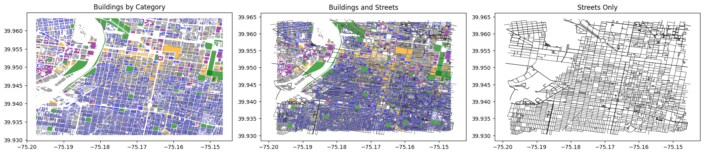
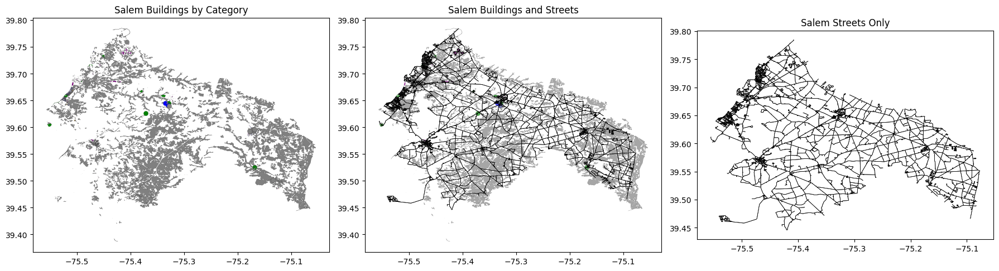

Downloading places of interest (POI) Data from OSM
Useful open street maps overpass API wrappers to download buildings and streets.
[1]:
import pandas as pd
import geopandas as gpd
import matplotlib.pyplot as plt
from nomad.map_utils import download_osm_buildings, download_osm_streets, remove_overlaps
## Download by Bounding Box
bbox = (-75.19747721789525, 39.931392279878246, -75.14652246706544, 39.96336810441389)
# Download, process, and save
buildings = download_osm_buildings(bbox, schema='garden_city', clip=True, explode=True, infer_building_types=True)
streets = download_osm_streets(bbox, clip=True, explode=True)
buildings = remove_overlaps(buildings)
buildings.to_file("philadelphia_buildings.geojson", driver="GeoJSON")
streets.to_file("philadelphia_streets.geojson", driver="GeoJSON")
print(f"Downloaded {len(buildings)} buildings, {len(streets)} streets")
print(f"Building categories: {buildings['building_type'].value_counts().to_dict()}")
# Show sample of downloaded data
print("\nSample buildings data:")
print(buildings.head())
# Plot results
fig, axes = plt.subplots(1, 3, figsize=(18, 6))
colors = {
'park': 'green',
'home': 'blue',
'retail': 'orange',
'workplace': 'purple',
'other': 'grey'
}
# Buildings by category with proper colors
for category, color in colors.items():
subset = buildings[buildings['building_type'] == category]
if len(subset) > 0:
subset.plot(ax=axes[0], color=color, edgecolor='black', linewidth=0.1, alpha=0.7)
axes[0].set_title('Buildings by Category')
axes[0].set_aspect('equal')
# Buildings + Streets
for category, color in colors.items():
subset = buildings[buildings['building_type'] == category]
if len(subset) > 0:
subset.plot(ax=axes[1], color=color, edgecolor='black', linewidth=0.08, alpha=0.7)
streets.plot(ax=axes[1], color='black', linewidth=0.4)
axes[1].set_title('Buildings and Streets')
axes[1].set_aspect('equal')
# Streets only
streets.plot(ax=axes[2], color='black', linewidth=0.5)
axes[2].set_title('Streets Only')
axes[2].set_aspect('equal')
plt.tight_layout()
plt.show(block=False)
Downloaded 37954 buildings, 5584 streets
Building categories: {'home': 31427, 'other': 5639, 'retail': 545, 'workplace': 243, 'park': 100}
Sample buildings data:
osm_type subtype subtype_2 subtype_3 building_type osm_category \
0 yes residential <NA> NaN home home
1 yes residential <NA> NaN home home
2 yes residential <NA> NaN home home
3 yes residential <NA> NaN home home
4 yes residential <NA> NaN home home
addr:street addr:city addr:state addr:housenumber \
0 South Taylor Street Philadelphia PA 1702
1 South Taylor Street Philadelphia PA 1700
2 South 25th Street Philadelphia PA 1701
3 South Ringgold Street Philadelphia PA 1654
4 South Ringgold Street Philadelphia PA 1653
addr:postcode geometry
0 NaN POLYGON ((-75.18609 39.9314, -75.18608 39.9313...
1 NaN POLYGON ((-75.18615 39.93147, -75.18614 39.931...
2 NaN POLYGON ((-75.18626 39.93147, -75.18627 39.931...
3 NaN POLYGON ((-75.1856 39.93157, -75.18561 39.9315...
4 NaN POLYGON ((-75.18537 39.93157, -75.18532 39.931...

[2]:
## Download geometries by City Name
city_name = 'Salem, New Jersey'
salem_buildings = download_osm_buildings(city_name, schema='garden_city', explode=True, infer_building_types=True)
salem_streets = download_osm_streets(city_name, explode=True)
# Remove overlaps
salem_buildings = remove_overlaps(salem_buildings)
# Save data
salem_buildings.to_file("salem_buildings.geojson", driver="GeoJSON")
salem_streets.to_file("salem_streets.geojson", driver="GeoJSON")
print(f"Downloaded {len(salem_buildings)} buildings, {len(salem_streets)} streets")
print(f"Building categories: {salem_buildings['building_type'].value_counts().to_dict()}")
# Show sample of downloaded data
print("\nSample Salem buildings data:")
print(salem_buildings.head())
print("\nSample Salem streets data:")
print(salem_streets.head())
# Plot Salem results
fig, axes = plt.subplots(1, 3, figsize=(18, 6))
colors = {
'park': 'green',
'home': 'blue',
'retail': 'orange',
'workplace': 'purple',
'other': 'grey'
}
# Buildings by category
for category, color in colors.items():
subset = salem_buildings[salem_buildings['building_type'] == category]
if len(subset) > 0:
subset.plot(ax=axes[0], color=color, edgecolor='black', linewidth=0.1)
axes[0].set_title('Salem Buildings by Category')
axes[0].set_aspect('equal')
# Buildings + Streets
for category, color in colors.items():
subset = salem_buildings[salem_buildings['building_type'] == category]
if len(subset) > 0:
subset.plot(ax=axes[1], color=color, edgecolor='black', linewidth=0.08, alpha=0.7)
salem_streets.plot(ax=axes[1], color='black', linewidth=0.5)
axes[1].set_title('Salem Buildings and Streets')
axes[1].set_aspect('equal')
# Streets only
salem_streets.plot(ax=axes[2], color='black', linewidth=0.5)
axes[2].set_title('Salem Streets Only')
axes[2].set_aspect('equal')
plt.tight_layout()
plt.show(block=False)
Downloaded 7940 buildings, 16761 streets
Building categories: {'other': 6086, 'home': 1550, 'workplace': 155, 'retail': 135, 'park': 14}
Sample Salem buildings data:
osm_type subtype subtype_2 subtype_3 building_type osm_category \
0 yes unknown <NA> NaN other other
1 yes unknown <NA> NaN other other
3 apartments residential <NA> NaN home home
5 apartments residential <NA> NaN home home
7 yes unknown <NA> NaN other other
addr:street addr:city addr:state addr:housenumber addr:postcode \
0 NaN NaN NJ NaN NaN
1 NaN NaN NJ NaN NaN
3 Bailey Street Pilesgrove NaN 10 08098
5 Alloway Road Woodstown NaN 21 08098
7 NaN NaN NaN NaN NaN
geometry
0 POINT (-75.17019 39.59249)
1 POINT (-75.4075 39.7597)
3 POINT (-75.33482 39.64503)
5 POINT (-75.33003 39.64045)
7 POLYGON ((-75.31782 39.64825, -75.31779 39.648...
Sample Salem streets data:
osmid highway name oneway reversed length \
0 11753099 residential Delaware Drive False True 180.070307
1 11758546 residential Cove Road False False 83.323719
2 11757359 residential Church Street False False 84.049012
3 11753099 residential Delaware Drive False False 180.070307
4 11753099 residential Delaware Drive False True 156.529141
u_original v_original ref lanes access bridge maxspeed service tunnel \
0 105201345 105231739 NaN NaN NaN NaN NaN NaN NaN
1 105201345 105215935 NaN NaN NaN NaN NaN NaN NaN
2 105231739 105215928 NaN NaN NaN NaN NaN NaN NaN
3 105231739 105201345 NaN NaN NaN NaN NaN NaN NaN
4 105231739 105219781 NaN NaN NaN NaN NaN NaN NaN
geometry
0 LINESTRING (-75.47648 39.72523, -75.47604 39.7...
1 LINESTRING (-75.47648 39.72523, -75.47605 39.7...
2 LINESTRING (-75.47582 39.72676, -75.47494 39.7...
3 LINESTRING (-75.47582 39.72676, -75.47604 39.7...
4 LINESTRING (-75.47582 39.72676, -75.47577 39.7...
